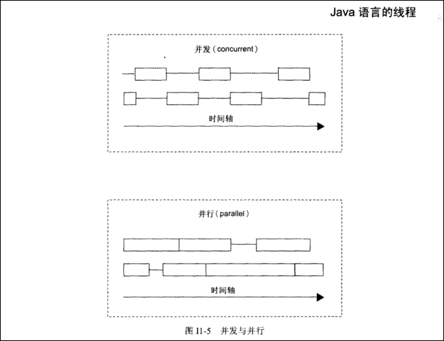

何谓线程
正在执行程序的主题只有一个称为单线程。我们在解读程序时，看起来好像是顺着处理流程追下去，事实上是在追着线程的操作
由1个以上的线程所构成的程序称为多线程程序（GUI应用程序，比较花费时间的I/O处理，多个客户端）
被调用出来启动新线程的是start方法，而非run方法。调用start方法时，会有两个操作（启动新的线程–>调用run方法）
计算机只有1个中央处理器，根本不可能真正同时进行1个以上的处理。事实上，程序的处理是像这样不断切换有操作的线程，这种操作就称为并发（concurrent）
如果有1个以上中央处理器的计算机上跑的java执行处理系统，则线程操作可能是并行（paralle）而非并发。当1个以上的线程并行操作时，就可以真正同时进行1个以上的处理。

线程的启动
Thread类、Runnable接口
线程的暂时停止 sleep方法
线程的共享互斥 synchronized方法，synchronized语句和锁定
线程的协调
如欲执行wait()、notify()、notifyAll()方法，线程需获取锁定（这是规则）
public class Main{
public satic void main(String[] args){
new PrintThread("*").run();
new PrintThread("+").run();
}
}
public class PrintThread extends Thread{
private String message;
public PrintThread(String message){
this.message=message;
}
public void run(){
for(int i=0;i<100;i++){
System.out.print(message);
}
}
}run方法并不是由新线程执行的原因，是因为由主线程执行的原因，这个程序时单一线程（single Thread）的程序。
MyThread t=new MyThread();
t.start();
try{
t.sleep(1000);
}catch(InterruptedException e){
}t.sleep(1000)容易招致误解，并非加上了t的线程，而是执行此语句的线程使用，而是Thread类的方法。最佳写法为Thread.sleep(1000)
public class Something{
public void iA(){}
public void iB(){}
public synchronized void iSyncA(){}
public synchronized void iSyncB(){}
public static void cA(){}
public static void cB(){}
public static synchronized void cSyncA(){}
public static synchronized void cSyncB(){}
}
//变量x,y则表示Something类的不同实例
(1) x.iA() 与 x.iA()
(2) x.iA() 与 x.iB()
(3) x.iA() 与 x.iSyncA()
//只要是synchronized以外的方法，都可以从两个线程执行。即使有线程在执行其他synchronized方法，也仍能执行。
(4) x.iSyncA() 与 x.iSyncA()
(5) x.iSyncA() 与 x.iSyncB()
//相同实例的synchronized的实例方法，一次只能由一个线程来执行
(6) x.iSyncA() 与 y.iSyncA()
(7) x.iSyncA() 与 y.iSyncB()
//由于实例不同则锁定（lock）也不同，因此即使是synchronized的实例方法也能从两个以上的线程来同时执行
(8) x.iSyncA() 与 Something.cA()
//类方法本来就不是synchronized方法，因此可以同时执行
(9) x.iSyncA() 与 Something.cSyncA()
//synchronized的实例方法与synchronized的类方法由于锁定（lock）不同，
//因此可以从数个线程来同时执行。
(10) Something.cSyncA() 与 Something.cSyncA()
(11) Something.cSyncA() 与 Something.cSyncB()
//synchronized的类方法无法从数个线程同时执行
(12) x.cSyncA() 与 y.cSyncB()
//x.cSyncA()调用的方法是Something.cSyncA(),
//而 y.cSyncB()调用的方法是Something.cSyncB(),
//因此都会变成synchronized的类方法，所以无法从数个线程同时执行